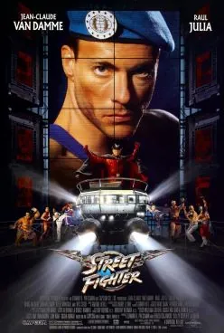

The genetics
Genetic engineering is a secondary but recurring thread in this campy adaptation of the video game. Bison wants an army of 'genetic supersoldiers' to conquer the world and uses the captured soldier Charlie as his first guinea pig. The scientist who carries out the procedure, Dr. Dhalsim, works for the dictator but is shown sympathetically: he secretly alters Charlie's mental programming so that he keeps his humanity, protects him, and finally chooses to stay with him to atone. The genetic transformation itself is presented as monstrous, leaving Charlie a green-skinned, disfigured creature (the game's Blanka), and as a tool of military domination. Turning an adult into a super-strong being overnight is pure fantasy; the film uses 'genetic' as a label for a comic-book transformation.
How genetics is portrayed
- Overall portrayal of genetics
- negative Genetic engineering is a dictator's instrument for building a conquering army and a source of monstrous suffering; the scientist's redemption lies in atoning for it.
- Outcome of the genetic intervention
- negative The procedure severely disfigures Charlie and makes him a weapon Bison nearly unleashes on the hostages; only Dhalsim's secret sabotage limits the harm.
- General M. Bison
- villain Aim: military, power (negative). The dictator and drug kingpin orders the creation of genetic supersoldiers to conquer the world and uses a captured soldier as a test subject; he is the film's villain, defeated by Guile.
- Dr. Dhalsim
- ambivalent Aim: military (negative). He performs the supersoldier procedure for Bison but secretly preserves Charlie's humanity, protects him and stays behind to atone, so the film presents him as complicit but redeemable.
The story
In the Asian country of Shadaloo, the warlord General M. Bison holds dozens of Allied Nations relief workers hostage and demands a $20 billion ransom. Colonel William Guile refuses to pay and sets out to find Bison's base, recruiting the con artists Ryu and Ken, who infiltrate the organisation of Bison's arms supplier Sagat. Reporter Chun-Li and her crew pursue their own revenge. Meanwhile Bison has Guile's captured friend Charlie Blanka taken to his laboratory, where the scientist Dr. Dhalsim turns him into the first of Bison's 'genetic supersoldiers'. Charlie is horribly disfigured, but Dhalsim secretly preserves his humanity. Guile's forces storm the base and free the hostages, and Guile defeats Bison. Dhalsim and Charlie stay behind as the base explodes, Dhalsim wishing to atone for what he did.
Sources
- https://en.wikipedia.org/wiki/Street_Fighter_%281994_film%29
- https://es.wikipedia.org/wiki/Street_Fighter%3A_La_%C3%BAltima_batalla
- https://fr.wikipedia.org/wiki/Street_Fighter_%28film%2C_1994%29
- https://video-games.fandom.com/wiki/Street_Fighter_(1994_film)
- https://moriareviews.com/sciencefiction/street-fighter-film-1994.htm